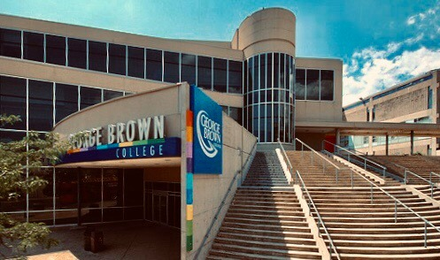

Personal Data
Bio
I’m a third year student at George Brown studying in the Computer Programmer Analyst field. I’ve had an interest in computers & technology from a young age. As a teenager I took a computer repair course and found I excelled in it. This interest thrust me into the field of technology, and I began studying web development and Python on my own time in between breaks at work, before attending George Brown in 2017.
After college, I’d like to continue my education in university and get a bachelor’s degree in Computer Science. From there I’d like to gain a career in the field of DevOps, and eventually find work in different places around the world.
In the future I’d like to teach programming to children. I was inspired by many of the great teachers at George Brown who made programming fun and I’d like to pass that on to others as well.
Philosophy
My philosophy on work is that I believe a good job should be rewarding, but also challenging, that it should provide an outlet for your creativity, and a sense of satisfaction upon completion. As a student in the technology field, I’ve faced challenges that, at the time, seemed insurmountable. But each time I’ve faced difficulties, I’ve come out more knowledgeable and prepared for the workplace.
I enjoy the sense of challenge that programming provides, and I believe that there is no greater satisfaction than finally working through a difficult error, a problem that seemed impossible to fix. Seeing the program you’ve created come alive underneath your fingertips brings a level of joy that’s unrivaled by any other job I’ve ever had.
“The computer programmer is a creator of universes for which he alone is the lawgiver. No playwright, no stage director, no emperor, however powerful, has ever exercised such absolute authority to arrange a stage or field of battle and to command such unswervingly dutiful actors or troops.”
― Joseph Weizenbaum
Cover Letter & Resume Sample
Used in application for the RBC DevOps Internship position
Resume Cover Letter